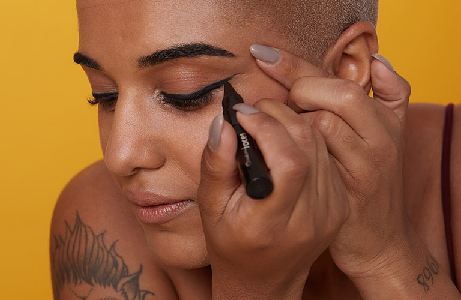

Não sabe por onde começar e precisa de dicas de maquiagem?
Não se preocupe. Como fazer uma maquiagem perfeita é algo que
passa por muitas etapas e detalhes, é preciso seguir algumas
orientações para alcançar bons resultados, sem falhas.
Quer saber como fazer maquiagem simples de um jeito fácil?
Lembre-se de ter à mão os pincéis essenciais, além de produtos
como base e corretivo – adequados à cor da sua pele –, para,
assim, garantir uma preparação perfeita. Vamos lá?
Passo a passo da maquiagem
1. Limpe e hidrate o rosto

Entre as nossas dicas de maquiagem, a primeira, mas não menos importante, é a etapa de limpeza e hidratação para a preparação de pele.Primeiramente, lave bem o rosto e certifique-se de secá-lo bem. Em seguida, utilize um creme facial para deixar a pele macia e hidratada. Não se esqueça do protetor solar para manter a proteção diária. A aplicação de todos os produtos pode ser feita com os dedos, mas sem exageros. Após passe um prime.
2.Escolha a base pelo tom certo
Será necessário preciso escolher a melhor base para o seu rosto. Para isso, é preciso saber como identificar o tom certo para a sua pele.Se você quer fazer uma maquiagem para usar durante o dia, por exemplo, é recomendado uma cobertura leve. Se for para usar à noite, uma cobertura um pouco mais pesada não será um problema.
3.Abuse da paleta de sombras
Ter uma paleta de sombras ajuda a variar a make. Mas para isso é necessário saber combiná-las entre si. Aproveite estas dicas de maquiagem que preparamos. Primeiro, divida seu estojo em um degradê. Depois disso, aplique uma sombra de tons mais básicos e neutros nas pálpebras móveis, garantindo profundidade aos olhos. Aqui, você poderá escolher um tom que combine com a cor da sombra principal, que será aplicada depois, ou um que combine com a cor de sua pele.Em seguida, é só aplicar a sombra mais escura nos cantos externos. Como toque final na produção, deposite uma das cores mais claras como um ponto de luz no centro das pálpebras móveis e/ou nos cantos internos dos olhos. E, se quiser levantar o olhar, esfume em direção às sobrancelhas.
4.Passe o delineador com firmeza

Um delineado perfeito exige firmeza. Por isso, entre todas as dicas de maquiagem apresentadas até agora, guarde essa muito bem:Na hora de traçar, use uma base de apoio, como uma bancada ou mesa. Se o local onde você realiza sua automaquiagem não permite essa manobra, apoiar o punho no próprio rosto também ajuda.
5. Faça o batom durar
A primeira dica de make para fazer o batom durar é manter os lábios hidratados. Isso pode evitar aquele aspecto craquelado, que pode acontecer mesmo com batons líquidos, Contornar os labios com um lapis, antes do batom terar um melhor resultado.
Para acessar um tutorial de maquiagem em video.. CLIQUE AQUi
Início